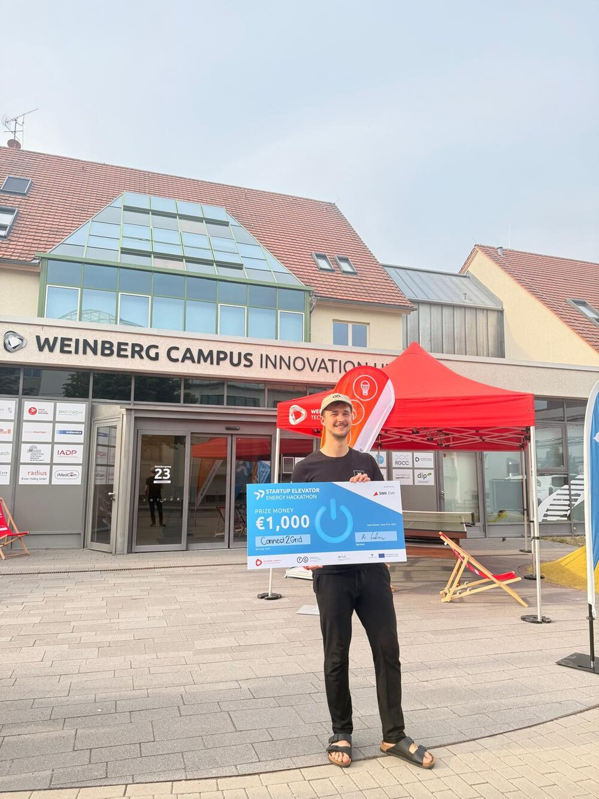
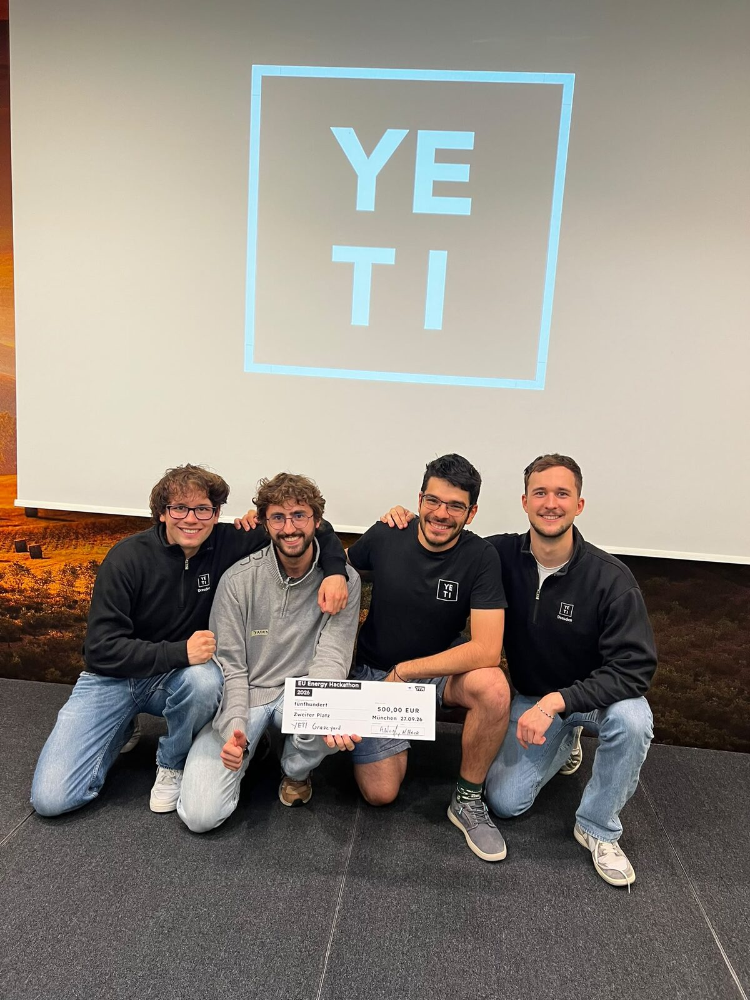
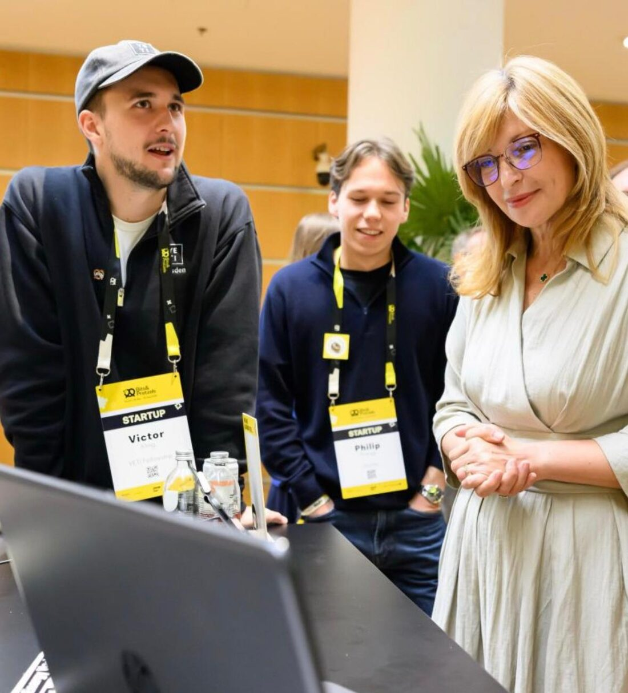
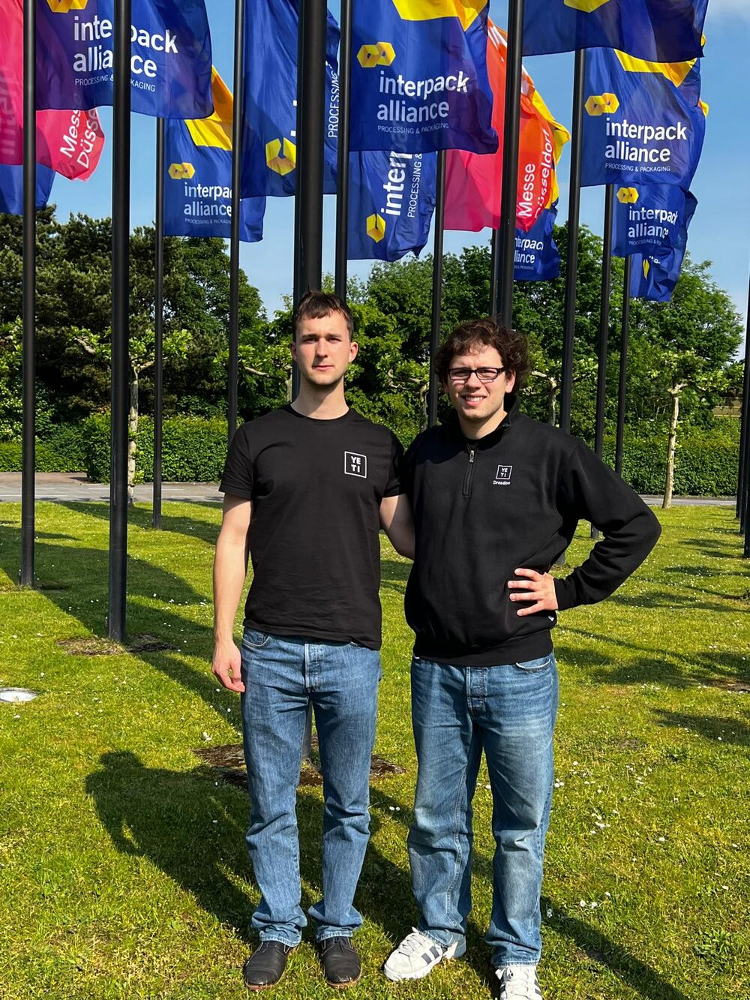
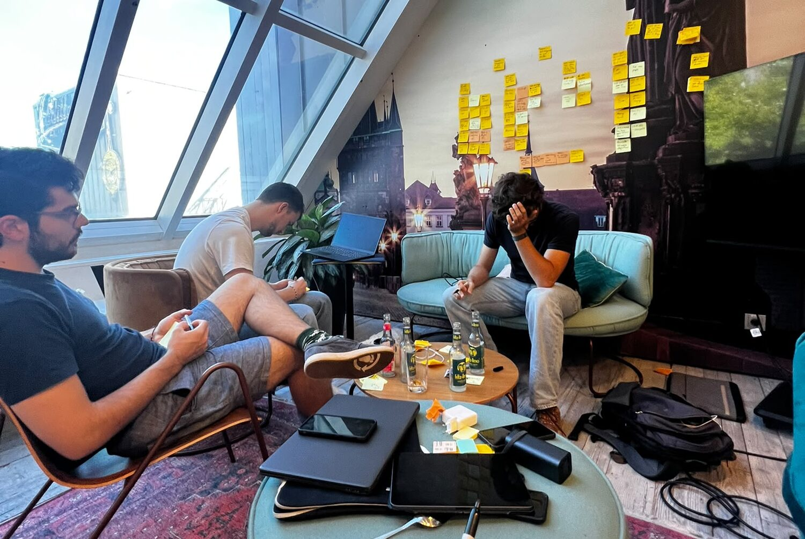
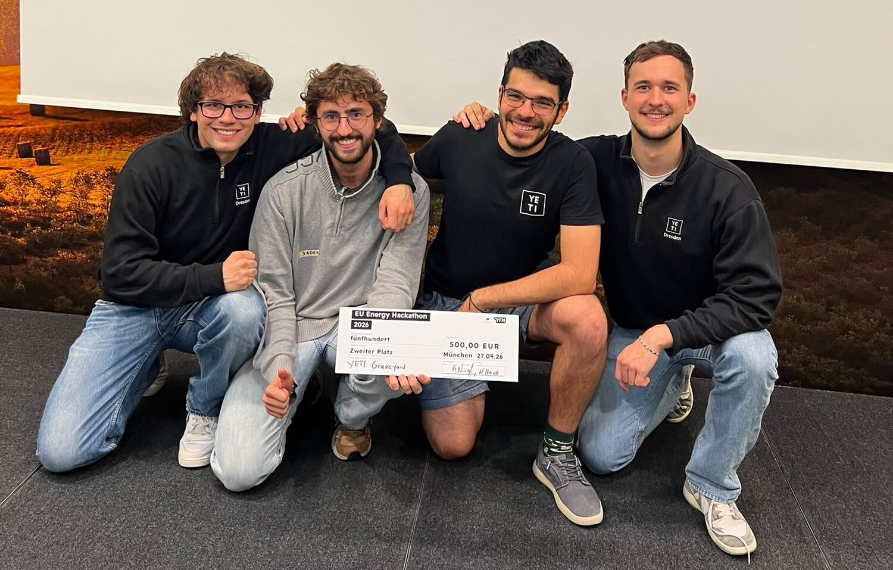

Connect2Grid
Sieg beim Startup Elevator Energy Hackathon in Halle (Saale) mit einer Idee, wie sich Netzanschlüsse digitalisieren lassen.
Mit Design Thinking entwickeln wir gemeinsam mit Ihren Mitarbeitenden innovative Lösungen für interne Probleme und bringen Ihrem Team bei, selbst innovativer zu denken.
Lösungen lassen sich heute schneller bauen als je zuvor. Knapp wird etwas anderes: die richtige Frage, welches Problem sich zu lösen lohnt.
Genau dort setzen wir an. Wir finden mit Ihrem Team die Probleme, die zählen, und bringen ihm bei, sie selbst anzugehen.
Wir arbeiten mit Teams in etablierten Unternehmen: an Problemen aus dem eigenen Haus und an der Erfahrung Ihrer Kundinnen und Kunden.
Wir nehmen ein konkretes internes Problem und arbeiten es mit den Menschen durch, die es täglich spüren: von der Analyse über den Prototyp bis zum Test bei Ihnen im Haus.
Wir sprechen direkt mit Ihren Kundinnen und Kunden und entwickeln neue Produkte, die deren Erfahrung mit Ihrem Unternehmen verbessern.
Wir bringen Ihrem Team Design Thinking bei: in Workshops und Coachings, an echten Fragen aus Ihrem Alltag. Danach wendet es die Methode ohne uns an.
Hackathons, Messen, ein eigenes Produkt und Projekte mit Startups. Alles im ersten Jahr bei YETI.

Sieg beim Startup Elevator Energy Hackathon in Halle (Saale) mit einer Idee, wie sich Netzanschlüsse digitalisieren lassen.

Wir lernen aus gescheiterten Netzanschlussanfragen, damit künftige Projekte schneller ans Netz kommen.

Wir stellen unser Hackathon-Projekt der EU-Kommissarin für Startups, Forschung und Innovation vor.

Projekt mit dem Startup PRUUVE (UV-Dosismessung), unter anderem mit Kundengesprächen auf der Interpack in Düsseldorf.
Die Plattform, die Studierende mit passenden Hochschulgruppen zusammenbringt: 1.000 aktive Nutzer, über 5.000 Besucher, offizielle Arbeitsgruppe des StuRa der TU Dresden.
Beratungsprojekt für das Startup Leaftronics im Rahmen von YETI.

Alles beginnt mit Interviews: mit Ihren Mitarbeitenden oder mit Ihren Kundinnen und Kunden. Aus dem, was wir dort hören, entwickeln wir die Lösung.
Wir verdichten die Gespräche zu einer klaren Frage, bevor wir antworten.
Viele Ideen, gemeinsam mit Ihrem Team, ohne sie zu früh zu bewerten.
Wir bauen schnell etwas, das man anfassen kann.
Die Befragten testen es im Alltag. Wir verbessern, bis es trägt.
Mathematik, Physik und Wirtschaftsingenieurwesen: Wir sind alle Mitglieder von YETI Dresden.

Entwürfe für diesen Bereich. Aussagen erscheinen erst nach Freigabe der genannten Personen.
„Dank Jago, Victor und dem restlichen Team von YETI konnten wir ein Pilotprojekt mit einem etablierten Unternehmen starten und unseren Geschäftsbereich ausweiten.“Philipp Wellermann
„Mit Ansatz konnten wir unsere Prozesse intern digitalisieren, um den starken Anstieg an Netzanschlussanfragen zu bewältigen.“[Name]
[Zitat anfragen: Was hat sich im Team nach dem Beratungsprojekt verändert?][Name]
1. Begründete Vermutung, wie ein Problem zu lösen ist.
2. Der Punkt, an dem man ansetzt: der erste Schritt.
Das Zeichen: Der durchgezogene Strich ist die Begründung, der gestrichelte die Vermutung. Ob sie trägt, zeigt der Test.